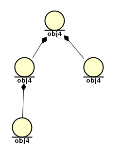

QObject model philosophy¶
QObject is a base class for almost each class in Qt. But what is exactly hidden in it? First of all, QObject class is respnosble for creating hyerarchical model in application, what allows developer not to care about maintaing the memory while creating and deleting objects. You can pass the parent for an object as a parameter on creation:
QObject(QObject* parentObject = 0)
As you can see, default value for this parameter is zero, so if you can skip it if you want to create a root object. Another way to set the parent is to call setParent() function. But what do we need parent-children relationship for? Let’s look at the short example:
QObject* obj1 = new QObject;
QObject* obj2 = new QObject(obj1);
QObject* obj3 = new QObject(obj2);
QObject* obj4 = new QObject(obj1);
You can see that hyerarchy for the program above goes as follows:
Now, if we call deleteLater() method of obj3 or obj4, it will only delete obj3 or obj4 respectivly. In contrast, if we call obj2.deleteLater() it will delete obj2 along with obj3. Finally, if we call obj1.deleteLater() we will destroy all four objects. Thus, calling deleteLater() method deletes the instance and all its children.
Note
Usually, every object in Qt application should be created by calling new
and deleted with deleteLater() method. Excptions are objects with no parents or temporal objects, like objetc that were created to be passed as an argument, for instance lbl.setPixmap(QPixmap(":/background.png")), where QPixmap object is used as an argument for setPixmap function and does not even have a name.
But it’s not the only reason why we need parent concept. You can access the list of children from object by calling children(), or you can search for specific child using findChild() function.
For widgets parent-children relation looks even more interesting. Every child widget can be only rendered inside its parent. For instance, following example shows two QPushButton objects created on top of QLabel:
QLabel* lbl = new QLabel;
lbl->setPixmap(QPixmap(":/background.png"));
QPushButton* pb1 = new QPushButton("Button 1", lbl);
QPushButton* pb2 = new QPushButton("Button 2", lbl);
pb2->move(pb1->width(),0);
It makes the answer for the previous excersice obvious. Since both widgets did not have a parent, they both were created as separate windows.
Signals and slots¶
Last and the most important about QObject is the signal-slot connection feature. The concept of signals and slots is very simple and that is why it is so good:
1. Every object of class inherited from QObject can transimit and receive signals. 2. Every object of class inherited from QObject can have one or few slots. Slot is a function that is called when a signal connected to it is received. 3. Every signal can be connected to one or few slots, internal(signal and slot are inside one object) and external (signal and slot are in different objects). 4. Each signal can have one or few argumentsthat will be passed to the slot. 5. Signal and slot connection can be performed in any part of the program. 6. When one objectstaking part in connetion is destructed, signal and slot are automatically disconnected.
Of course, there are few issues of using signal-slot mechanism:
1. There is no compiling-time checking of connect() function, so if something is wrong with connect() you will only be able to see it after starting the application.
2. Signal-slot connection works a bit slower than direct call of function. You
won’t see it, probably, but still it is good to know.
3. by default signal-slot connection works in queued way, which means that some time will pass between emiting a signal and calling a dedicated slot.
4. Class that utilizes signals and slots must be inherited from QObject or
one of QObject successors.
Signals¶
Signals in Qt is nothing but functions with the capability of sending messages. Signals are always public in Qt5, Which means that you can emit signals that are defined in predecessor class as well as you can emit signal that you have defined by yourself.To create and use a signal:
1. Put Q_OBJECT macro in header file right below the opening bracket like this:
class MyClass: public QObject
{
Q_OBJECT
- Declare the signal in class in
signalssection:
signals:
void mySignal(int arg1);
Note
Arguments you want to pass to slot should be specified inside backets, not as a return value.
3. Whenever you want to emit the signal, just call emit:
int a = 10;
emit mySignal(a);
Here you emit mySignal() with 10 as an argument. Later on you will see that
almost anything can be used as an argument, what makes it especially usefull when using object pointers as arguments.
Slots¶
Slot in Qt is a function that can be called if the dedicated signal is triggered. Still, slots can also be called as a normal function. Moreover, slots can be public, protected or private, just like a normal function. To create a slot:
1. Put Q_OBJECT macro in header file right below the opening bracket like this:
class MyClass: public QObject
{
Q_OBJECT
2. Declare the slot in class in public slots, protected slots or private slots section:
public slots:
void mySlot(int arg1);
- Define the slot in .cpp just like a regular function:
void MyClass::mySlot(int arg1) {
int a = arg1 + 10;
qDebug() << "the answer is " << a;
}
Note
Here qDebug() function is used to print the answer in the console, you can think of it as analouge of printf().
The only thing left is to connect mySlot() to some signal, so it will be
called every time signal is triggered.
Signal-slot connetion¶
Connection between signals and slots is performed using connect(). Normally,
you use it like this:
MyClass* obj1 = new MyClass;
MyClass* obj2 = new MyClass;
QObject::connect(obj1, SIGNAL(mySignal(int)), obj2, SLOT(mySlot(int)));
Note
As mentioned above, you call connect() from any part of the program. Nevertheless, you should add QObject:: before connect() if you try to use it outside of class inherited from QObject, for instance, in main().
Arguments of connect() are:
- sender: pointer to the sender object;
- signal: pointer to the signal function (you can see it is inside the
SIGNAL()macro) - receiver: pointer to the receiver object;
- slot: pointer to the slot function (you can see it is inside the
SLOT()macro)
Note
If you call connect() inside a class and want to use it as the receiver or the sender, you can use this pointer instead
So that is it! Every time mySignal() of obj1 is triggered mySlot() of obj2 is called. Later on, if you want to disconnect these signal and slot you only need to call disconnect function:
After that, obj2 will no longer react on mySignal() of obj1.
Only few more notes about connections left:
1. Signal can be connected to other signals. If so, signal that used a slot will be emitted every time the first signal is emitted.
2. Signal and slot that are connected to each other should have the same number of arguments. The only exception is when slot does not have any arguments at all.